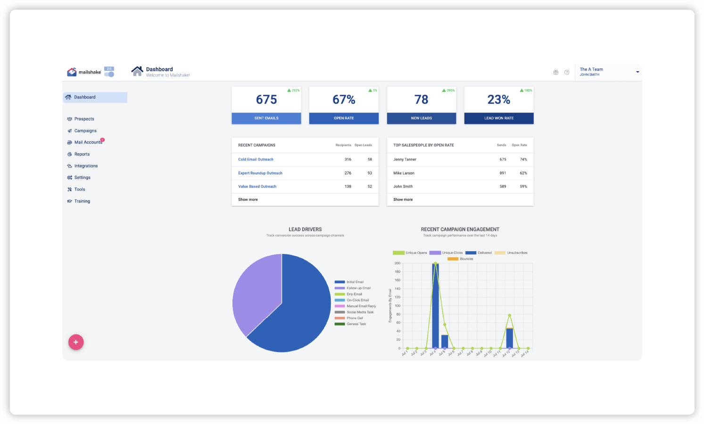

Transaction Insights Dashboard
Analyze and manage your transactions with comprehensive insights and reporting.

About the Project
The Transaction Insights Dashboard provides users with detailed analytics and reporting on their financial transactions. Features include real-time data visualization, transaction categorization, and customizable reports.
Tackled Challenges
-
Challenge:
Managing large volumes of transaction data.
Solution:Optimized data storage and retrieval using MongoDB aggregation pipelines, ensuring efficient processing and quick access to financial data.
-
Challenge:
Ensuring system resilience and handling errors effectively.
Solution:Developed robust error handling and retry mechanisms to improve system reliability by 20%.
Technologies Used
Git
GitHub
Node.js
Express.js
MongoDB
Chart.js
Axios
Postman